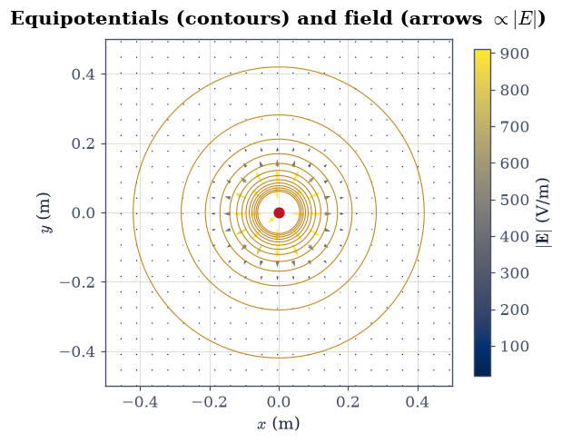
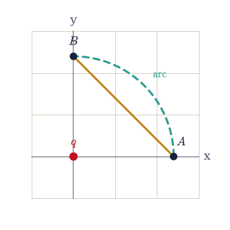
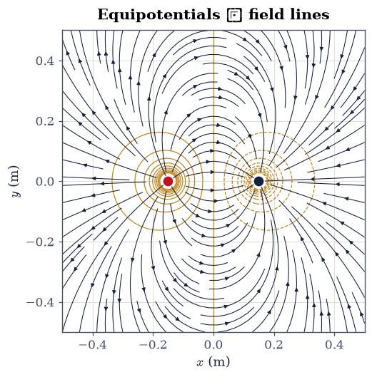
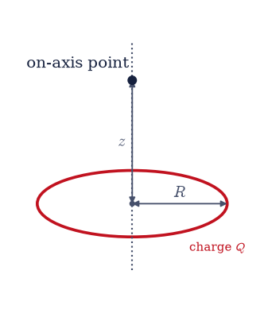
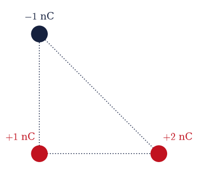
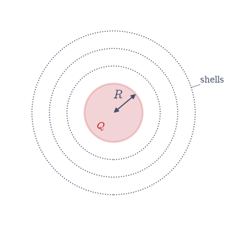
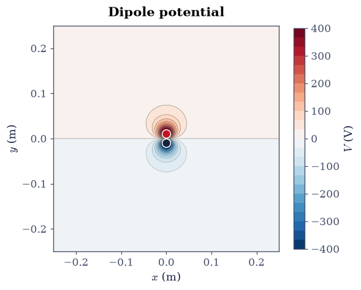
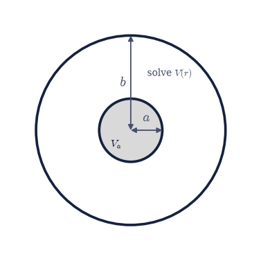

3.2 The Electric Potential and Electrostatic Energy#
Notebook overview#
§3.1 built the electric field. This one trades it for a scalar. Because the electrostatic field is conservative, the work it does on a test charge depends only on the endpoints, and that fact lets us summarise the entire vector field by a single number at each point: the potential \(V\). A scalar is easier to compute, easier to plot, and easier to superpose, and most of electrostatics is more naturally phrased through it. The field is never lost, only repackaged: we recover it at any moment as \(\mathbf E = -\nabla V\).
We develop the work-and-energy side of electrostatics and, with it, two pieces of numerical vector calculus the rest of the volume needs: the numerical gradient (to get \(\mathbf E\) back from \(V\)) and numerical line and volume integration (to compute work, potentials of distributions, and stored energy). Each is introduced where the physics first calls for it. We confirm path-independence directly, watch equipotentials and field lines form an orthogonal mesh, assemble a few charges and count their energy two different ways, and locate that energy in the field itself through \(u = \tfrac{\varepsilon_0}{2}|\mathbf E|^2\). The notebook closes on the idea that drives the rest of the volume: a conductor is an equipotential, and finding the potential subject to fixed conductor values is the boundary-value problem that §3.4 solves on a grid.
Everything is in SI units, with \(\varepsilon_0 = 8.854\times10^{-12}\,\)F/m and \(k = 1/4\pi\varepsilon_0 \approx 8.99\times10^9\). The objects here, potential maps and equipotentials, are static by nature, so this notebook has no animations: a contour plot shows a scalar field better than motion could.
How to read the checks. Each exercise ends with a
validatecall against an independent fact: \(-\nabla V\) matching the Coulomb field, a closed-loop integral vanishing, two energy bookkeepings agreeing. A ✓ is strong evidence; a ✗ is a prompt to locate the discrepancy, not a verdict.
Theory in brief#
The potential as work per charge#
Moving a test charge through the field requires work, and because the electrostatic field is conservative that work depends only on the endpoints. This defines the potential as the work per unit charge to bring a charge in from infinity,
a scalar measured in volts. For a single point charge the integral gives
Field from potential#
Inverting the definition, the field is the (negative) gradient of the potential,
so \(\mathbf E\) points “downhill” in \(V\) and its magnitude is the steepness. We compute \(\nabla\) numerically with central differences (the same stencils as §0.3), which is why a dense grid matters.
Path-independence and conservative fields#
That a potential exists at all is the statement that the field is conservative: the work around any closed loop vanishes, equivalently the curl is zero,
This holds throughout electrostatics; Griffiths [Gri17] (ch. 2) derives both statements from Coulomb’s law. It fails once a changing magnetic field induces an electric field (Faraday’s law, §3.7), where \(\nabla\times\mathbf E \ne 0\) and no single-valued potential exists.
Equipotential surfaces and the potential of a distribution#
Surfaces of constant \(V\) are equipotentials. Since \(\mathbf E = -\nabla V\) is normal to the level sets of \(V\), the field is everywhere perpendicular to them, and field lines and equipotentials form an orthogonal mesh. For an extended source we superpose, and because \(V\) is a scalar this is often easier than summing the field:
Electrostatic energy#
The work to assemble a set of charges, brought in one by one from infinity, is
where the factor \(\tfrac12\) in the first form removes the double counting of each pair, and the second form is the sum over distinct pairs. The same energy can be pictured as living in the field, with energy density
These are two views of one quantity; Griffiths [Gri17] (ch. 2) carries the rearrangement from the charge sum to the field integral out in full. The field view is the one that survives into radiation, where energy detaches from the charges and travels on its own.
Setup#
Data and instruments: the SI constants of the volume (\(\varepsilon_0\), \(k\), the
nanocoulomb charge scale, the two charge colours), and the closed-form Coulomb
field of §3.1 restated here as the independent
reference that every numerical gradient in the notebook is checked against.
The potential itself is not here: you write V_point in Exercise 1, its
superposition V_field in Exercise 3, and the line-integral machinery of the
work theorem in Exercise 2.
The Setup below holds this notebook’s data and instruments — nothing you are asked to build. It is collapsed so the building stays yours; expand it whenever you want the details.
Exercise 1 — Potential of a point charge, and E = −∇V#
We start with the scalar that stands behind the
field. The point-charge potential of Eq. 194 is a smooth hill, and the
field of §3.1 is its (downhill) gradient, Eq. 195.
Recovering one from the other numerically introduces the numerical gradient:
numpy.gradient applies central differences on the grid (the stencils of
§0.3), so a dense grid
keeps the truncation error small. The charge here is \(q = 1\,\)nC at the origin,
where \(V\) diverges; the singular value is left as inf/nan for the caller to
mask rather than patched inside the potential itself.
Write
V_point(q, r0, X, Y), the potential \(V = kq/r\) of Eq. 194 for a charge \(q\) sitting at \(\mathbf r_0 = (x_0, y_0)\), evaluated on the field-point gridsX,Y. Write this one yourself — the implementation is the lesson.On a \(400\times400\) grid over \([-0.5, 0.5]^2\,\)m (which does not sample the singular point itself), evaluate \(V\) with it, then take its gradient with
numpy.gradient(passing the axis coordinates so the spacing is correct) and form \(\mathbf E = -\nabla V\).Compare it to the closed-form Coulomb field of §3.1 on the region \(0.15 < r < 0.45\,\)m (away from the singularity and the one-sided grid edges), confirming the recovery to a relative error well below \(10^{-3}\) (Fig. 193).
E = −∇V vs Coulomb field on 0.15<r<0.45 m: max relative error = 2.73e-04

Fig. 193 The point-charge potential as equipotential contour lines (amber: closer spacing means a stronger field, the faithful encoding of \(|\mathbf E|\) through \(V\)), with the field \(\mathbf E=-\nabla V\) drawn by ecp.draw.field_quiver so that arrow length and colour are \(\propto |\mathbf E|\). The arrows cross every equipotential at right angles and point toward lower \(V\).#
Validation 1#
✓ E = −∇V recovers the Coulomb field [got 0.000273226 vs expected 0 (rtol=1e-06, atol=0.001)]
True
Exercise 2 — Path-independence#
The reason a potential exists is that the work is
path-independent: Eq. 196 says the line integral of \(\mathbf E\) between
two points does not depend on the route, only on the endpoints, and equals
\(-(V_B - V_A)\). We test this directly by integrating along different paths and
comparing. Each path is parametrised by \(t\in[0,1]\), and the scalar integrand
\(\mathbf E(\mathbf r(t))\cdot\mathbf r'(t)\) is integrated with
scipy.integrate.quad (adaptive, default tolerances). The charge is again
\(q = 1\,\)nC at the origin.
Write
line_integral(path, dpath), the work per unit charge \(\int_0^1 \mathbf E(\mathbf r(t))\cdot\mathbf r'(t)\,dt\) along a path handed over as two callables,path(t) -> (x, y)and its velocitydpath(t) -> (dx/dt, dy/dt)on \(t\in[0,1]\), evaluated withscipy.integrate.quad. Write this one yourself — the implementation is the lesson.Take \(A=(0.3, 0)\) and \(B=(0, 0.3)\,\)m (the same radius) and integrate \(\int\mathbf E\cdot d\boldsymbol\ell\) with it along the straight segment \(A\to B\) and along the circular arc of radius \(0.3\,\)m from \(A\) to \(B\); both give zero, since \(A\) and \(B\) share a potential.
For endpoints at different radii, \(P=(0.3, 0)\) and \(Q=(0, 0.5)\,\)m, integrate along the straight segment and along the two-leg polyline \(P\to(0.3, 0.5)\to Q\), and confirm both equal \(-(V_Q - V_P)\ne 0\).
This path-independence is exactly what lets a potential exist; it will fail once induction enters (§3.7).

Fig. 194 The two integration paths from \(A=(0.3,0)\) to \(B=(0,0.3)\,\)m around the charge \(q\) at the origin, both endpoints at the same radius: a straight chord (amber) and a circular arc at fixed radius (green). The work \(\int\mathbf E\cdot d\boldsymbol\ell\) is the same on either path, since it depends only on the endpoints; here it is zero because \(A\) and \(B\) share a potential.#
(a) A,B same radius: straight = -4.99e-16, arc = -2.98e-16, −ΔV = -0.00e+00
(b) P,Q diff radii: straight = 1.1983e+01, polyline = 1.1983e+01, −ΔV = 1.1983e+01
Validation 2#
✓ the work equals −ΔV (here zero) on the straight path [got -4.99357e-16 vs expected -0 (rtol=1e-06, atol=1e-15)]
✓ the arc at fixed radius does no work (E ⊥ dℓ) [got -2.97924e-16 vs expected 0 (rtol=1e-06, atol=1e-12)]
✓ two different paths give the same work (path-independence) [got 11.9834 vs expected 11.9834 (rtol=1e-06, atol=1e-09)]
✓ and that common work equals −(V_Q − V_P) [got 11.9834 vs expected 11.9834 (rtol=1e-06, atol=1e-09)]
True
Exercise 3 — Equipotentials are perpendicular to the field#
Because \(\mathbf E = -\nabla V\) (Eq. 195), the field points straight across the level sets of \(V\): equipotentials and field lines meet at right angles. We check this without relying on magnitudes by measuring the alignment of the analytic field with \(-\nabla V\) (their cosine should be \(1\)), then draw the orthogonal mesh. The pair here is \(+1\,\)nC at \((-0.15, 0)\) and \(-1\,\)nC at \((+0.15, 0)\,\)m, and it needs the extended-source form of the potential, Eq. 197, which for point sources is just a sum.
Write
V_field(charges, X, Y), the total potential of a list of(q, (x0, y0))charges: superpose theV_pointcontributions you wrote in Exercise 1. Superposing a scalar is the whole advantage of the potential, and this one-line sum is what it comes to.Evaluate \(V\) with it on a \(400\times400\) grid over \([-0.5, 0.5]^2\,\)m, take \(-\nabla V\) with
numpy.gradient, and compute the cosine between it and the analytic superposed field on \(0.08 < r < 0.45\,\)m from both charges.Confirm the alignment is \(1\) to within \(10^{-3}\), then plot equipotentials and field lines together (Fig. 195).
min cosine between −∇V and the analytic field = 1.000000 (1 ⇒ E ∥ −∇V ⊥ equipotentials)
/opt/hostedtoolcache/Python/3.12.13/x64/lib/python3.12/site-packages/IPython/core/pylabtools.py:158: UserWarning: Glyph 10178 (\N{PERPENDICULAR}) missing from font(s) DejaVu Serif.
fig.canvas.print_figure(bytes_io, **kw)

Fig. 195 Equipotentials (amber contours of \(V\)) and field lines (dark streamlines of \(\mathbf E\)) for \(+1\,\)nC at \((-0.15,0)\) and \(-1\,\)nC at \((+0.15,0)\,\)m. The two families meet at right angles everywhere, the geometric content of \(\mathbf E=-\nabla V\): the field crosses each level set of the potential normally. The streamlines show direction and orthogonality only; their density here is illustrative, not a flux measure.#
Validation 3#
✓ E is perpendicular to equipotentials (E ∥ −∇V) [got 1 vs expected 1 (rtol=1e-06, atol=0.001)]
True
Exercise 4 — Potential of a continuous distribution#
A scalar superposes more easily than a vector, so the potential of an extended source is often the gentler integral, Eq. 197. The uniformly charged ring is the clean case: its on-axis potential has a tidy closed form, and differentiating it returns the on-axis field of §3.1. The ring here has radius \(R = 0.05\,\)m and carries \(Q = 1\,\)nC in the \(z=0\) plane.
Compute the on-axis potential \(V(z)\) by integrating Eq. 197 over the azimuthal angle with
numpy.trapezoidon a dense grid of \(720\) points, and confirm it equals \(kQ/\sqrt{z^2+R^2}\).Sample \(V(z)\) on a \(z\)-grid, take \(E_z = -dV/dz\) with
numpy.gradient, and confirm it matches the ring field \(kQz/(z^2+R^2)^{3/2}\) of §3.1.

Fig. 196 The charged ring for the potential calculation: a circle of radius \(R\) carrying total charge \(Q\), seen obliquely, with its symmetry axis dotted. The on-axis point a distance \(z\) above the centre is where \(V(z)\) is evaluated; by symmetry the on-axis field is purely axial.#
ring potential vs kQ/√(z²+R²): max rel error = 4.44e-16
E_z = −dV/dz vs the §3.1 ring field: max rel error (interior) = 8.70e-04
Validation 4#
✓ the ring's on-axis potential is kQ/√(z²+R²) [max|Δ| = 5.68434e-14 (rtol=0.0001, atol=1e-09)]
✓ E_z = −dV/dz recovers the ring field of §3.1 [got 0.000869659 vs expected 0 (rtol=1e-06, atol=0.01)]
True
Exercise 5 — Energy of an assembly of charges#
Bringing charges together from infinity costs work, and that stored work is the electrostatic energy Eq. 198. There are two equivalent bookkeepings: half the sum of each charge times the potential of all the others, or the sum over distinct pairs. The factor \(\tfrac12\) in the first form is exactly what stops every pair being counted twice. The assembly here is three charges, \(q = +1, +2, -1\,\)nC at \((0,0)\), \((0.1, 0)\), and \((0, 0.1)\,\)m, whose energy is worth computing both ways.
Compute it directly as \(\tfrac12\sum_i q_i V(\mathbf r_i)\), each \(V(\mathbf r_i)\) summing the other two charges’ point potentials.
Compute it again as the pairwise sum \(\sum_{i<j} kq_iq_j/r_{ij}\).
Confirm the two agree.

Fig. 197 The three-charge assembly: \(+1\,\)nC at \((0,0)\), \(+2\,\)nC at \((0.1,0)\), and \(-1\,\)nC at \((0,0.1)\,\)m (positions to scale; red positive, blue negative). The dotted segments are the three distinct pairs whose Coulomb energies \(kq_iq_j/r_{ij}\) sum to the assembly energy \(W\).#
½ Σ qᵢVᵢ = -3.7228e-08 J
Σ pairs = -3.7228e-08 J
Validation 5#
✓ the assembly energy ½ΣqᵢVᵢ equals the pairwise sum [got -3.72277e-08 vs expected -3.72277e-08 (rtol=1e-10, atol=1e-09)]
True
Exercise 6 — Energy stored in the field (student exercise)#
The same energy can be located not in the charges but in the field, with density \(u = \tfrac{\varepsilon_0}{2}|\mathbf E|^2\) (Eq. 199). Integrating that density over all space must give back the assembly energy, and this is the view that survives into radiation, where the energy leaves the charges behind. The uniformly charged sphere is the clean test: its field is known inside and out, and the total energy has the closed form \(W = \tfrac{3}{5}\,kQ^2/R\). For a sphere of radius \(R = 0.05\,\)m carrying \(Q = 1\,\)nC spread uniformly through its volume, that field is \(E(r) = kQr/R^3\) inside (\(r<R\)) and \(kQ/r^2\) outside.
Compute \(W = \tfrac{\varepsilon_0}{2}\int|\mathbf E|^2\,d^3r\) by integrating in spherical coordinates with
numpy.trapezoidover \((r,\theta,\varphi)\). Because the integrand is spherically symmetric the angular integrals factor out (to \(2\) and \(2\pi\)), so use a radial grid that is dense near \(R\) and extends far enough that the \(1/r^4\) tail is negligible.Compare to \(\tfrac{3}{5}\,kQ^2/R\).
Because the check tests the energy, a ✗ means “re-examine the field or the integration grid,” never a plotting issue.

Fig. 198 The uniformly charged sphere (radius \(R\), charge \(Q\), shaded) whose field energy is integrated. The dotted circles are spherical integration shells: inside the sphere the field grows as \(kQr/R^3\), outside it falls as \(kQ/r^2\), and \((\varepsilon_0/2)\int|\mathbf E|^2\,dV\) over the shells gives the total energy \(\tfrac35 kQ^2/R\).#
field-energy integral (ε₀/2)∫|E|²dV = 1.0777e-07 J
closed form (3/5)kQ²/R = 1.0785e-07 J
relative difference = 7.59e-04
Validation 6#
✓ the field-energy integral (ε₀/2)∫|E|²dV matches (3/5)kQ²/R [got 1.07769e-07 vs expected 1.07851e-07 (rtol=0.01, atol=1e-09)]
True
Exercise 7 — The potential map of a dipole#
The dipole of §3.1 looks even simpler through its potential: a positive hill over \(+q\) and a negative well over \(-q\), with the field crossing the equipotentials at right angles as always. Recovering the field from this map is one more use of the numerical gradient. The dipole here is \(+1\,\)nC at \((0, +0.01)\) and \(-1\,\)nC at \((0, -0.01)\,\)m.
Evaluate \(V\) on the \(400\times400\) grid with the
V_fieldyou wrote in Exercise 3, and plot its \(+/-\) lobes as equipotential contours (Fig. 199).Confirm that \(-\nabla V\) (via
numpy.gradient) reproduces the analytic dipole field of §3.1 on \(0.04 < r < 0.45\,\)m from each charge.
dipole field recovered from −∇V: max relative error = 6.58e-03

Fig. 199 The dipole potential for \(+1\,\)nC at \((0,+0.01)\) and \(-1\,\)nC at \((0,-0.01)\,\)m, as equipotential contours: a positive hill (red charge) and a negative well (blue charge), with the zero-potential plane (the perpendicular bisector) between them. The field \(\mathbf E=-\nabla V\) runs from the hill to the well, crossing every contour at right angles.#
Validation 7#
✓ the dipole field is recovered from its potential [got 0.00657884 vs expected 0 (rtol=1e-06, atol=0.01)]
True
Exercise 8 — The conductor as an equipotential (synthesis, forward to 3.4)#
A theme to close on, and the gateway to the rest of the volume. In electrostatic equilibrium a conductor is an equipotential volume: charges rearrange until \(\mathbf E = 0\) inside (any interior field would push them further), which makes \(V\) constant throughout and \(\mathbf E\) normal at the surface. The practical question then inverts. Instead of being handed the charges and finding \(V\), we are handed the conductor potentials and must find \(V\) everywhere between them. That is the boundary-value problem at the heart of §3.4, where Laplace’s equation \(\nabla^2 V = 0\) is solved on a grid.
Here we solve the simplest case in closed form and confirm it numerically. For two concentric spherical conductors, inner radius \(a = 0.05\,\)m held at \(V_a = 100\,\)V and outer radius \(b = 0.15\,\)m held at \(V_b = 0\), spherical symmetry reduces Laplace’s equation to \(\tfrac{d}{dr}\!\big(r^2\,dV/dr\big) = 0\), whose solution is \(V(r) = A + B/r\), linear in \(1/r\).
Build the finite-difference form of \(\tfrac{d}{dr}(r^2\,dV/dr)=0\) on a radial grid over \([a,b]\) with Dirichlet values at the ends, assemble the tridiagonal system, and solve it with
numpy.linalg.solve(a small dense solve here; §3.4 graduates to the sparse 2-D version). Write this one yourself — the implementation is the lesson.Confirm the numerical \(V(r)\) matches the closed form \(A + B/r\) fixed by the two boundary values.

Fig. 200 The boundary-value problem: two concentric spherical conductors, inner radius \(a\) held at \(V_a\) and outer radius \(b\) held at \(V_b\) (inner conductor shaded). Laplace’s equation is solved for the potential \(V(r)\) in the gap between them, the simplest case of the relaxation problem developed in §3.4.#
concentric-sphere BVP: numeric vs closed-form A+B/r, max rel error = 9.34e-06
(A = -50.000 V, B = 7.5000 V·m)
Validation 8#
✓ the finite-difference BVP solve reproduces the closed-form V(r)=A+B/r [max|Δ| = 0.000282484 (rtol=0.001, atol=1e-09)]
True
Notebook summary#
The scalar potential \(V=kq/r\) and \(\mathbf E=-\nabla V\), recovered against the Coulomb field to a relative error \(\sim10^{-3}\) (
numpy.gradient).Path-independence: the work \(\int\mathbf E\cdot d\boldsymbol\ell\) matched \(-\Delta V\) on two different paths (
scipy.integrate.quad), and equipotentials met field lines at right angles (minimum cosine \(\approx1\)).The charged ring’s potential \(kQ/\sqrt{z^2+R^2}\) with \(-dV/dz\) recovering the §3.1 field; the assembly energy \(\tfrac12\sum_i q_iV_i\) equal to the pairwise sum; the field energy \(\int(\varepsilon_0/2)|\mathbf E|^2\,dV=\tfrac35 kQ^2/R\); and the dipole potential map.
The conductor as an equipotential by finite-difference relaxation, foreshadowing the boundary-value problem of §3.4.
Outlook#
Capacitance and stored energy. The energy of a capacitor is this assembly energy specialised to two conductors; forces follow from the energy method, \(F = -dW/dx\).
The multipole expansion of \(V\). At large \(r\) the potential of any bounded distribution is a series in \(1/r\) (monopole, dipole, quadrupole), taken up in §3.5; the scalar makes the expansion far cleaner than for the field.
The self-energy puzzle. The field-energy integral \(\tfrac{\varepsilon_0}{2} \int|\mathbf E|^2\) diverges for a true point charge (the \(1/r^4\) density near \(r=0\)), a genuine flaw of classical electrodynamics that points toward field theory.
Earnshaw, again. In potential language: \(\nabla^2 V = 0\) in free space forbids a local minimum of \(V\), so no charge can sit in stable electrostatic equilibrium. This is the same impossibility met in §3.1, and a forward hook to Laplace’s equation in §3.4.